Tema 15.- Angiospermas 4: monocotiledóneas (Liliopsida)
| Carlos Romero Zarco, Universidad de Sevilla |
| Caracteres básicos
de las monocotiledóneas |
|||||
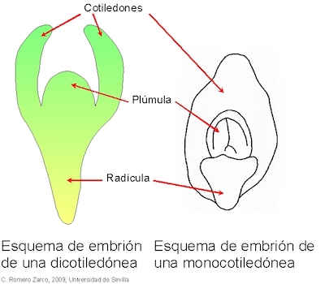 |
|
||||
|
|||||
| Or. Alismatales |
|||||||||||||
|
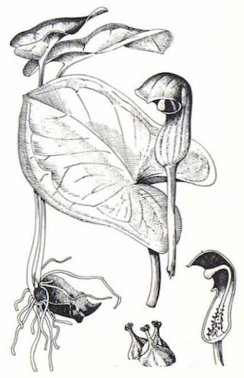 Arisarum simorrhinum - De A. Cadete
en
FVAOC (2) 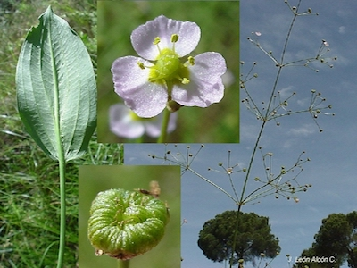 Alisma lanceolatum Foto: J.L. Alcón, Hinojos.
|
||||||||||||
| Las Liliales sensu
Cronquist |
|||||||
|
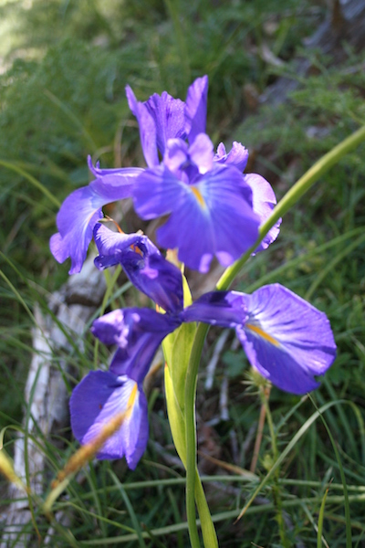 Los lirios representan una imagen evocadora
de este grupo de monocotiledóneas. Arriba, Iris latifolia, C.R.Z. |
|
||||||
| Hierbas
entomófilas |
|||||||||||||||||
Ophrys apifera (abejera); abajo a la izquierda sistema radical con dos tubérculos, uno pequeño, gastado, y otro nuevo grande. |
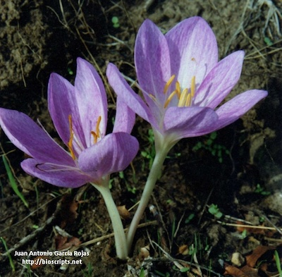 Colchicum lusitanicum,
un especie de quitameriendas. 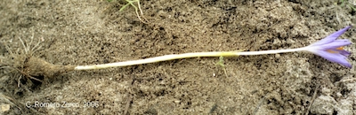 Crocus serotinus desenterrado. C.R.Z.
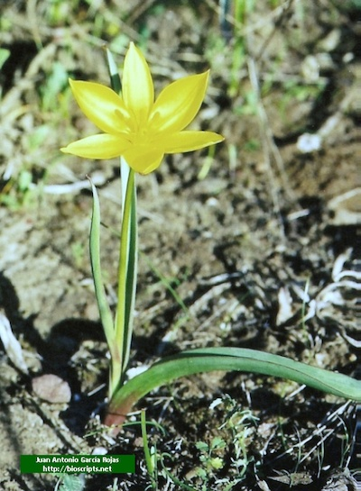 Tulipa sylvestris (tulipán silvestre)
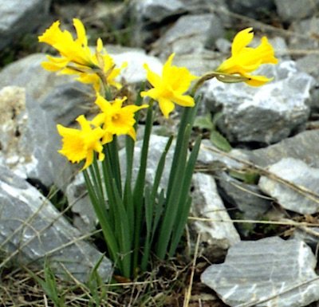 Narcissus bujei, Srra. de las Nieves. C.R.Z. 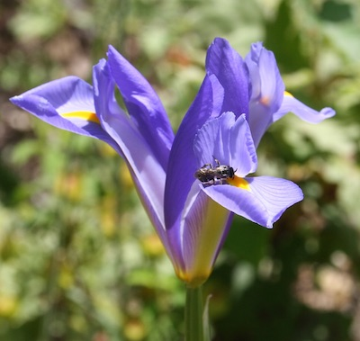 Flor de Iris sp. mostrando los 3 merantos; en uno de ellos hay un insecto visitante. C.R.Z. 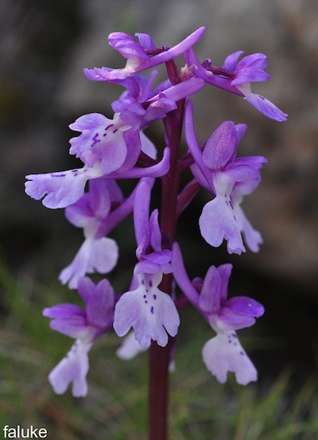 Espiga de Orchis mascula 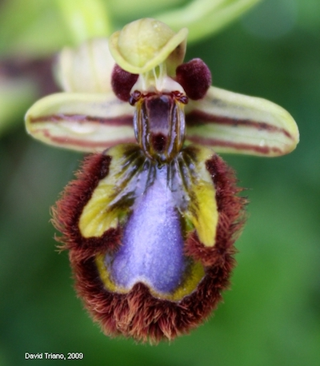 Flor de Ophrys speculum 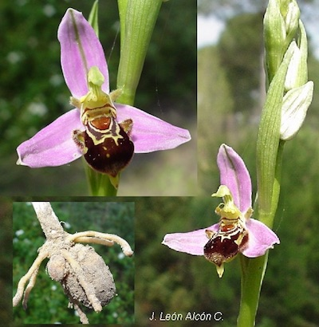 |
||||||||||||||||
| Trepadoras con
hojas reticuladas |
|||
|
|||
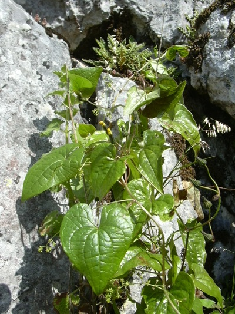 Tamus communis
(Dioscoreaceae) C.R.Z.
|
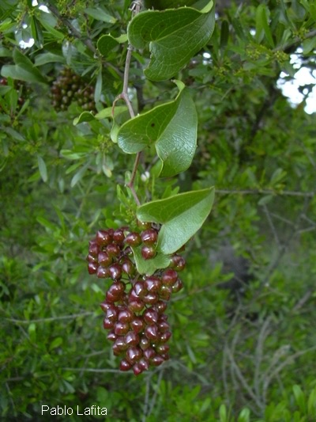 Smilax aspera (zarzaparrilla, Smilacaceae) |
||
| Liliales leñosas,
arbustivas o crasas (todas son asparagáceas) |
|||||||
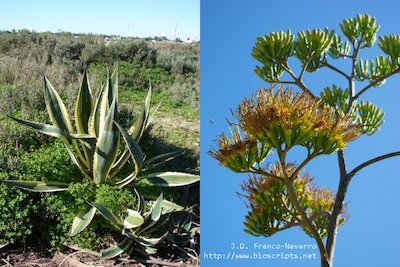 Planta e inflorescencia de pita (Agave americana).
|
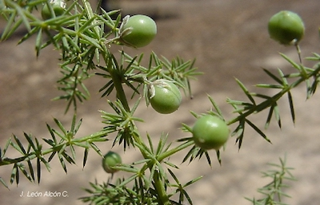 Asparagus acutifolius mostrando
cladodiuos espinescentes y bayas inmaduras.
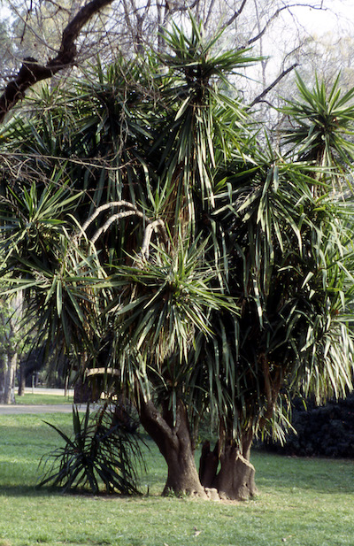 Ejemplar viejo de Yucca guatemalensis (pata de elefante) del Parque de Mª Luisa (Sevilla). C.R.Z. 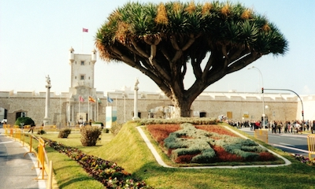 Drago (Dracaena draco). C.R.Z. |
||||||
| Las palmeras y
afines: or. Arecales |
|||||||
|
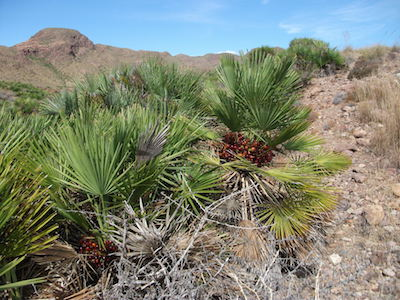 El palmito (Chamaerops humilis) en la
única
palmera autóctona que queda en Europa. Foto: P.N. Cabo de Gata (Almería). C.R.Z. 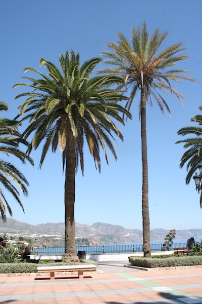 Dos especies del género Phoenix muy cultivadas en España: Ph. canariensis (fuste grueso) y Ph. dactylifera (fuste delgado), ambas de hojas pinnadas. Nerja, Málaga. C.R.Z. 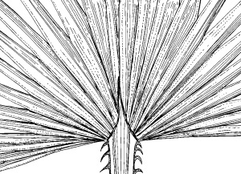 Detalle de la base de la lámina
foliar de
Washingtonia filifera. Modificado de Flora iberica |
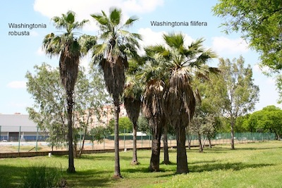 Las dos especies del género Washingtonia cultivadas en parques y calles de España: W. filifera (fuste grueso) y W. robusta (fuste delgado). Parque Amate, Sevilla. C.R.Z. |
||||||
| Hierbas
graminoides (commelínidas) |
|||||
A la derecha, población de aneas (Thypha
dominguensis, fam. Thyphaceae), planta helófita
característica de aguas lénticas. Sus largas hojas secas
se utilizan en cestería y para fabricar asientos
tradicionales.
|
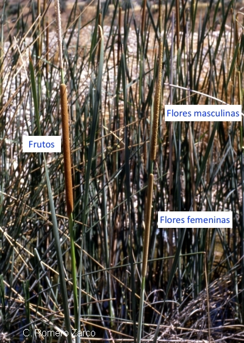 |
||||
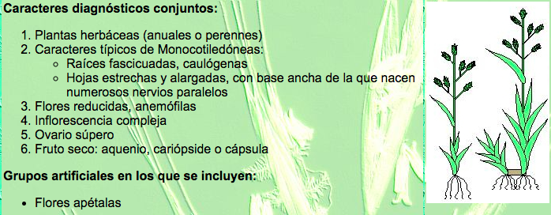 De Flodhis, módulo 20 (2009) C.R.Z. |
|||||
| Or. Poales |
||||||
|
||||||
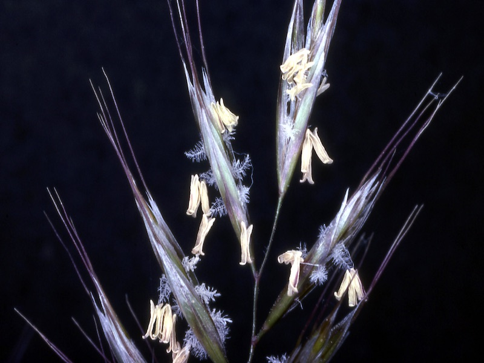 Foto: P. Romero Zarco |
| Resumen |
|